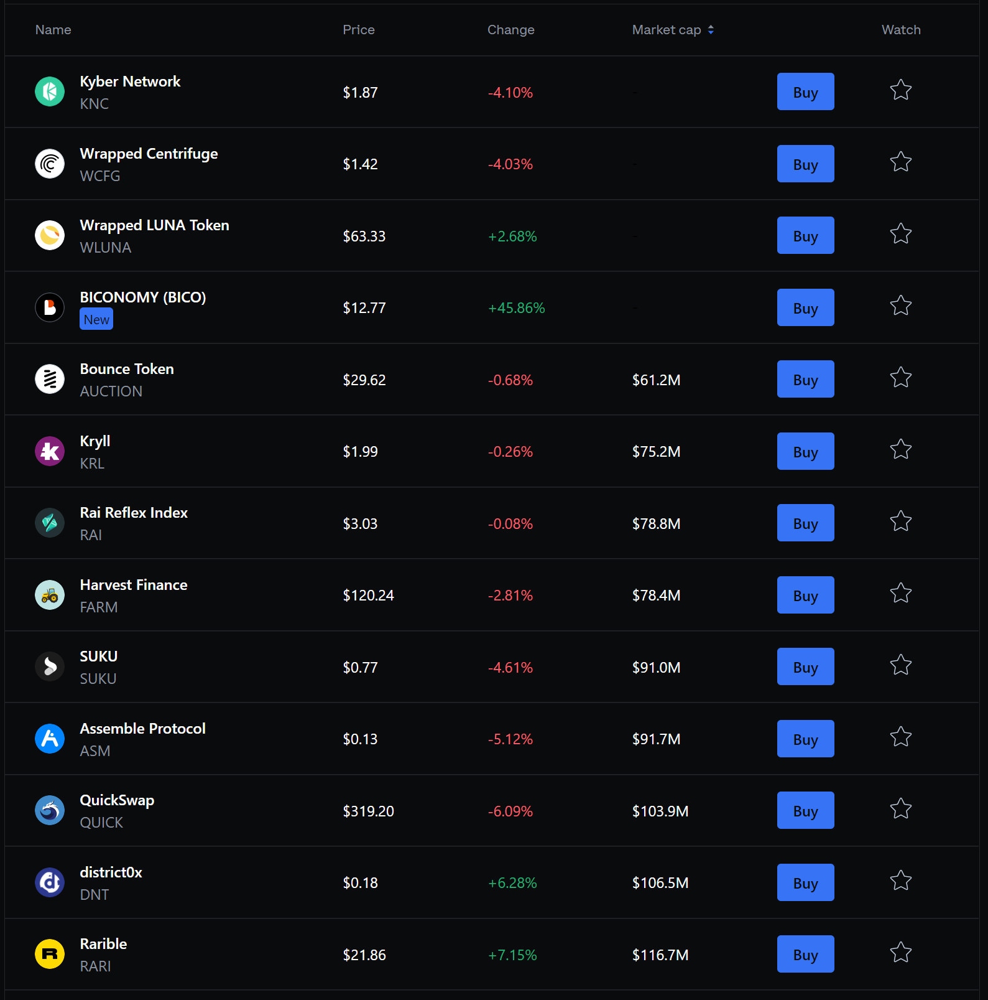
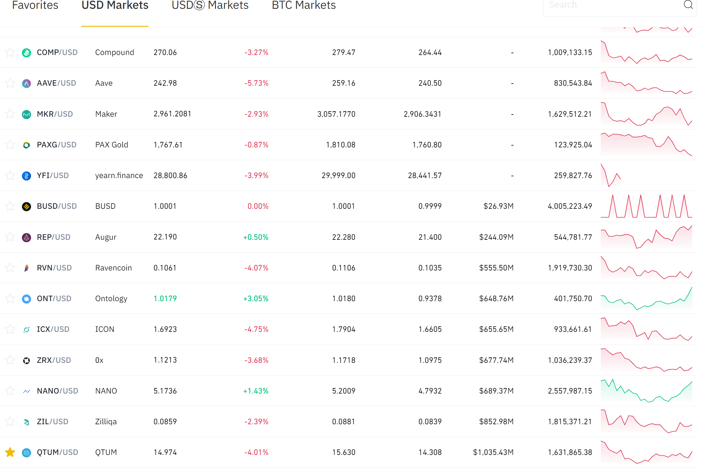

What are Alt Coins?
By Alt Coins I refer to the coins that are,
- not main stream
- might still be in early stage
- has potential as it brings someting new to the table
For example, ETH, ADA, DOGE etc are not alt coins. These are already well known coins.
Sources
Popular Exchanges
Tentatively, most stable alt coins can be found at,
- coinbase
- binance.us *
- kraken
- venmo
- crypto app
*Coin Trackers
- coinmarketcap
- reddit - crypto moonshot
- telegram - numerous crypto groups
news source yet to draft..
Coinbase We surf coinbase.com/trade and sort them in ascending order of Market Cap. That gives us list of established alt coins. Here's a screenshot from today,

There's your potential alt coins. Please note that, coinbase is more toward mainstream, more stable. You find less risky alt coins here and hence less growth, mostly.
Binance US Similarly, we surf binance.us/en/markets and sort them in ascending order of Market Cap. That gives us list of established alt coins. Here's a screenshot today,

* I don't have access to international binance, hence, I mention US product
coinmarketcap Surfing coinmarketcap.com/new we are able to find even riskier, potential trendy coins. Reserach and invest on your own risk.
References
Not an investment advice. Opions are personal, don't represent my employer.